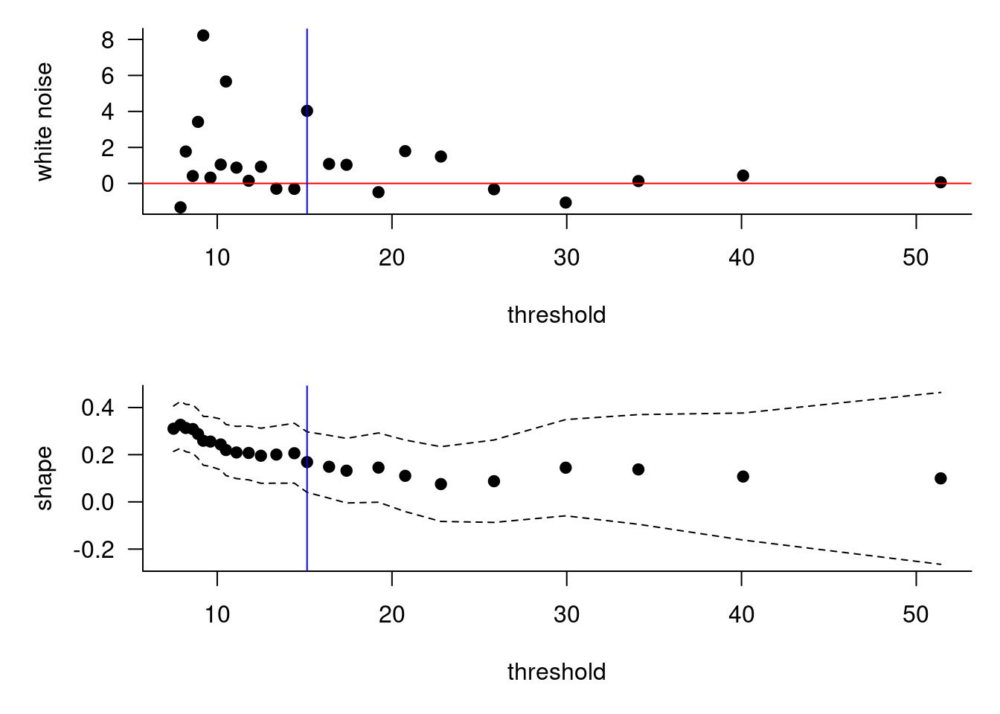
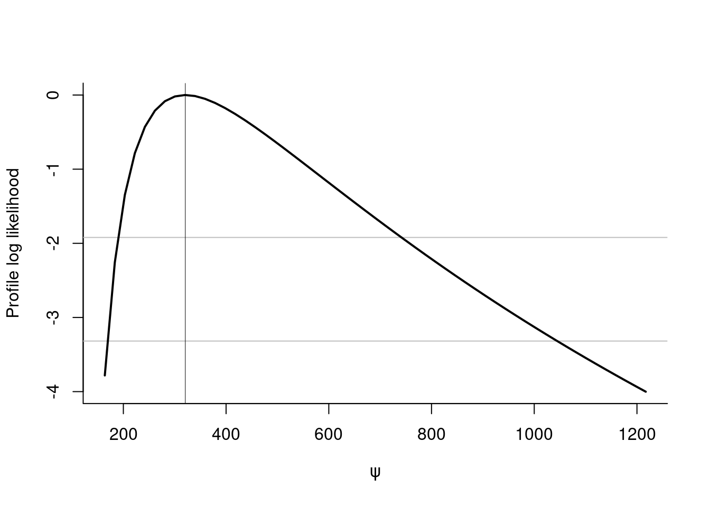

1 Univariate peaks-over-threshold analysis
This example illustrates some of the functions used in peaks-over-threshold analysis based on fitting a generalized Pareto distribution to threshold exceedances. We use the Venezuelian rainfall data, a time series of daily rainfall precipitations at Maiquetia airport in Venezuela, for the purpose of illustration.
library(mev)
library(lubridate, quietly = TRUE, warn.conflicts = FALSE)
data("maiquetia")
day <- seq.Date(from = as.Date("1961-01-01"),
to = as.Date("1999-12-31"), by = "day")
# Keep non-zero rainfall, exclude 1999 observations
nzrain <- maiquetia[year(day) < 1999 & maiquetia > 0]We will ignore temporal dependence and stationarity, but these should be considered. The first step in our analysis is to choose a threshold. We select candidates based on quantiles and test whether they lead to stable inference.
ths <- quantile(nzrain, seq(0.9, 0.99, length.out = 15))
# Threshold selection diagnostics
W.diag(xdat = nzrain, model = "nhpp", plots = c("WN","PS"), u = ths)NC.diag(nzrain, u = ths)Threshold selection diagnostics indicate that the shape is more or less constant over the range of threshold considered. Wadsworth’s white noise sequence yields a very large residual around \(u=20\), but the Northrop–Coleman score test yields \(P\)-value path above 0.2 for every threshold under consideration.
# Fit using maximum likelihood estimation
gpdf <- fit.gpd(nzrain, threshold = 20, show = TRUE)## Method: Grimshaw
## Log-likelihood: -832.629
##
## Threshold: 20
## Number Above: 216
## Proportion Above: 0.0604
##
## Estimates
## scale shape
## 15.5800 0.1088
##
## Standard Errors
## scale shape
## 1.60673 0.07785
##
## Optimization Information
## Convergence: successfulThe default optimization routine for the generalized Pareto distribution is Grimshaw’s method, which profiles out the likelihood. The method is almost guaranteed to converge. Because of non-regularity, the maximum likelihood estimator for \(\xi < -1\) does not solve the score equation and leads to infinite log-likelihood, hence the maximum returned lies on the boundary. The standard errors are based on the inverse observed information matrix and provided only if \(\xi>-1/2\). We can verify that our maximum likelihood estimate is indeed a maximum by checking if it solves the score equation if \(\hat{\xi}>-1\).
isTRUE(all.equal(
gpd.score(gpdf$estimate, dat = gpdf$exceedances),
c(0,0), tolerance = 1e-5))## [1] TRUEIf the sample is small, maximum likelihood estimators are biased for the generalized Pareto distribution (the shape parameter is negatively biased, regardless of the true value for \(\xi\)). Bias correction methods includes the modified score of Firth, but the default method is the implicit correction (subtract), which solves the
implicit equation
\[\begin{align}
\boldsymbol{\tilde{\theta}}=\hat{\boldsymbol{\theta}}-\boldsymbol{b}(\tilde{\boldsymbol{\theta}}). \label{eq:implbias}
\end{align}\]
The point estimate \(\boldsymbol{\tilde{\theta}}\) is obtained numerically as the root of this nonlinear system of
equations. In the present case, the sample size is large and hence the first-order correction, derived through asymptotic arguments from the generalized Pareto distribution likelihood, is small. Note that the bias correction requires \(\xi > -1/3\), since it is based on third-order cumulants of the distribution.
gpdbcor <- gpd.bcor(dat = gpdf$exceedances, par = gpdf$estimate)
#print the differences between MLE and bias-corrected estimates
gpdf$estimate - gpdbcor## scale shape
## 0.1915284 -0.0118876The package includes some default diagnostic plots (probability-probability plots and quantile-quantile plots), which include approximate confidence intervals based on order statistics. We can also get profile likelihood and profile-based confidence intervals for most quantities of interest (parameters of the generalized Pareto distribution, excepted shortfall, return levels, \(N\)-observation maxima mean and quantiles). The example below gives the estimated profile for the median of the centenial maximum distribution conditional on exceeding 15, along with 95% confidence intervals.
plot(gpdf, which = 2) #Q-Q plot
# Profile of median of maxima of 100 years
profile <- gpd.pll(param = "Nquant", dat = nzrain, threshold = 15,
N = length(nzrain)/(1998-1961)*100, q = 0.5)
# 95% confidence intervals
conf <- confint(profile, print = TRUE)
## Point estimate for the parameter of interest psi:
## Maximum likelihood : 320.622
##
## Confidence intervals, levels : 0.025 0.975
## Wald intervals : 118.72 522.524
## Profile likelihood : 177.214 741.869